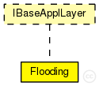

This documentation is released under the Creative Commons license
This documentation is released under the Creative Commons licenseWAVE application layer base class.
Author: David Eckhoff
See also: BaseWaveApplLayer
See also: Nic80211p
See also: Mac1609_4
See also: PhyLayer80211p
The following diagram shows usage relationships between types. Unresolved types are missing from the diagram. Click here to see the full picture.

The following diagram shows inheritance relationships for this type. Unresolved types are missing from the diagram. Click here to see the full picture.
| Name | Type | Default value | Description |
|---|---|---|---|
| debug | bool | false |
whether to print debug output |
| headerLength | int | 88bit |
header length of the application |
| sendBeacons | bool | false |
tell the applayer to periodically send beacons |
| beaconLengthBits | int | 256bit |
the length of a beacon packet |
| beaconPriority | int | 3 |
the access category of the beacon messages |
| beaconInterval | double | 1s |
the intervall between 2 beacon messages |
| maxOffset | double | 0s |
the maximum delay of messages sent down to avoid synchronous channel access |
| sendData | bool | false |
whether this applayer should send data |
| dataLengthBits | int | 1024bit |
the length of a data packet |
| dataOnSch | bool | true |
tells the applayer whether to use a service channel for datapackets or the control channel |
| dataPriority | int | 3 |
the access category for data packets |
| Name | Direction | Size | Description |
|---|---|---|---|
| lowerLayerIn | input |
from mac layer |
|
| lowerLayerOut | output |
to mac layer |
|
| lowerControlIn | input | ||
| lowerControlOut | output |
// // WAVE application layer base class. // // @author David Eckhoff // // @see BaseWaveApplLayer // @see Nic80211p // @see Mac1609_4 // @see PhyLayer80211p // simple Flooding like IBaseApplLayer { parameters: bool debug = default(false); //whether to print debug output int headerLength @unit(bit) = default(88bit); //header length of the application bool sendBeacons = default(false); //tell the applayer to periodically send beacons int beaconLengthBits @unit(bit) = default(256bit); //the length of a beacon packet int beaconPriority = default(3); //the access category of the beacon messages volatile double beaconInterval @unit(s) = default(1s); //the intervall between 2 beacon messages double maxOffset @unit(s) = default(0s); //the maximum delay of messages sent down to avoid synchronous channel access bool sendData = default(false); //whether this applayer should send data int dataLengthBits @unit(bit) = default(1024bit); //the length of a data packet bool dataOnSch = default(true); //tells the applayer whether to use a service channel for datapackets or the control channel int dataPriority = default(3); //the access category for data packets gates: input lowerLayerIn; // from mac layer output lowerLayerOut; // to mac layer input lowerControlIn; output lowerControlOut; }
This documentation is released under the Creative Commons license